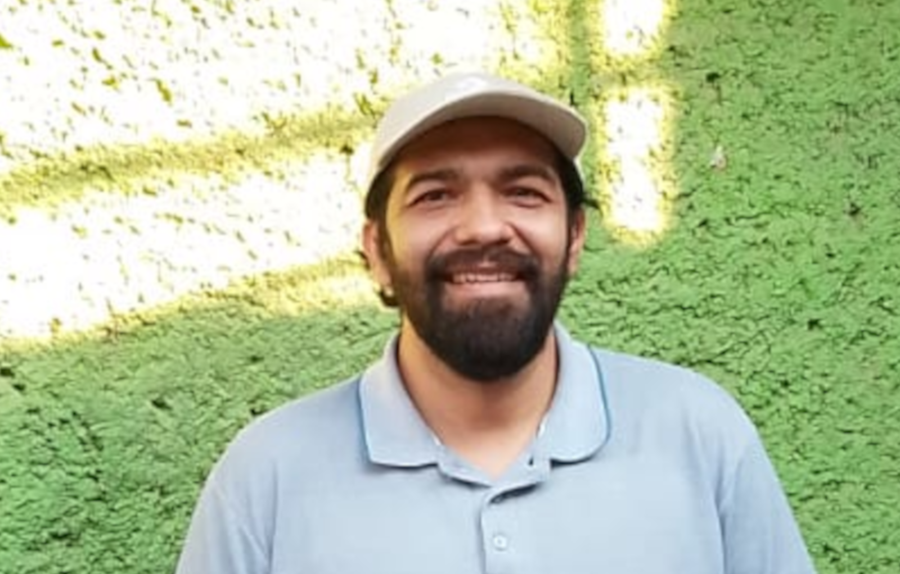

Mi pasión es tender un puente desde la mente del alumno hacia la profundidad de los conceptos. Este vínculo logra un aprendizaje significativo y duradero, que el estudiante se apropie de los conceptos más allá de sólo memorizar o quedarse en lo superficial. Conoce un poco más sobre mi en mi sitio web y en mi espacio de LinkedIn.
He colaborado en el desarrollo de cursos para el proyecto Matemáticas a distancia en la UNAM, así como en el Bachillerato en línea UNAM y el Bachillerato Policial (CDMX).
UNAMColaborador activo en Knotion, un ecosistema educativo digital que transforma la experiencia de aprendizaje dentro y fuera del aula.
knotionHe trabajado desarrollando software especializado para banca, automatizando modelos matemáticos sofisticados en riesgo de crédito y riesgo de mercado.
Finanzas cuantitativasMi tésis de maestría se concentró en el tema de hacer privados los datos de entrenaminto para algoritmos IA preservando su utilidad estadística con la metodología privacidad diferencial (la más usada hasta ahora para este fin).
IA & Privacidad⚡ Esta combinación única me permite ofrecerte cursos y asesorías donde no solo elevarás tu nivel, sino que te apropiarás de los conceptos llegando a un conocimiento profundo que te permitirá dominar los temas de manera eficaz.
Si quieres saber más sobre mis cursos, asesorías o proyectos, no dudes en contactarme. Estoy aquí para ayudarte a alcanzar tus objetivos educativos y profesionales.
Escríbeme a alejandroaef@proton.me